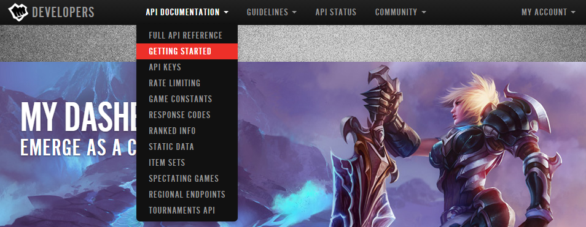
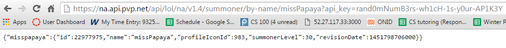
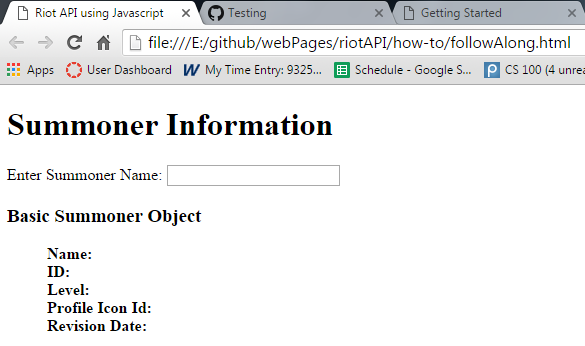
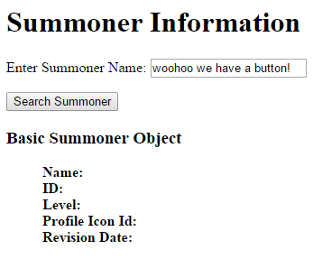

After reading this guide, you will know (or review):
This guide is designed for mostly for beginners who are looking for a way to get started using Riot's API, but it can also be useful for someone curious about how to use Javascript to implement the process. It does not assume that you have any prior experience working with API's, but it will help. There are a few things that you need to follow along with the examples in this guide:
If you are totally new to programming don't worry, you don't need any prior experience to follow along with the guide. You don't even need to download anything to test your API, although having some kind of text editor like notepad++ might help make things more readable. But you don't even need that either, you can just make a txt document and change the extension to whatever you need. However, having some knowledge of programming concepts will help in your understanding of the examples.
On the other hand, if you are using this as a starting point for Javascript or even HTML, here are some introduction resources to get you started:
This guide only goes over code examples that you can easily test out as long as you have something that handles HTTP request and responses. What it means to the average person is just basically opening up your html file in browser and, theoretically, everything should work. If or how you want to host it is totally up to you! Let's get started!
In layman's terms, you can think of an API as an agreement between two people stating
"If you give me this instruction, I will perform this action, or return this information"
Most people are used to interacting and navigating on a website through some sort of graphical interface to get information, for example, to check the weather. However, machines don't need any of that to check the weather, and neither do you, if you know how to comprehend this alternative "user interface" that software use to interact with other software. This shorthand way to do things like checking the current weather or adding an event to your calendar is what an API provides.
You can think of the API key as a password for you to gain access to information. Every Riot Games API request requires an API key, so you will need to include your API key using the api_key for each request you want to make/use.
If you play or have played League of Legends before, you probably already have a League of Legends account. So to get the API key, all you need to do is navigate to the Riot Games Developers website and sign in with your summoner name and password. After you've signed up, you will be able to see your API key on the dashboard. Copy and paste it in a file somewhere. You can always go back to your dashboard to retrieve it again but it's good to get into the habit of making sure you have a copy of your keys floating around somewhere (somewhere safe).
You'll see that there is a short getting started orientation page that you can read.
There are several different versions of keys, the one you get by default has the smallest rate limit. Unless you're trying to make a site like op.gg or have big dreams, you'll be quite okay with the key you have now. They also mention that you should be familiar with JSON objects and Object Oriented programming before getting started. Don't worry brah, this guide has got yah covered on dat!
Before we get started, we want to make sure that your API key actually works. Nothing is more lame than spending an inordinate amount of time trying to figure out what is wrong with your program and then realizing that you copied your API key wrong or something. So open up your browser and test the Summoner Look Up request!
To test the request, just enter in the request like how you would enter a web page in, as seen below. (Remember to replace <key> with
your API Key). If you want to see your details, replace riotSchmick with your summoner name
If your key works, you should see something like this:
You can probably already tell how the information is organized for this request. You see your summoner name and details about your account in quotes, and that this information is organized in a certain way. You can only assume this form is in JSON, because that's what rito said! But if you're a beginner you might be asking what even is JSON? What's an Object? How do I extract this information that I got from this API to make something that users can interact with? Well, no better way to learn than to get this process started!
To follow along with this guide, you'll need set up some files to work with. Let's first start with the HTML file. This is a good time to start thinking of what you want to show in your web page. For the sake of demonstration, we'll be showing every element that the Summoner Look Up Object has to give.
So create a text file and rename it to riotApiTest with a .html extension instead of a .txt extension (riotApiTest.html) and fill it with this:
If you're a beginner, you must be thinking, what did I just do? Well, if you go to the folder where this file is and double-click on it, it should pop up in your web browser as something that looks like this:
An HTML file is basically the web page version of a text file and comes with it's own rules for implementation.
You might notice that your html file doesn't look like the web page you just opened, although you can see the contents distributed throughout
the html file with the words enclosed with "<" and ">" characters not appearing in the browser page. Those are called HTML Tags .
HTML tags are the hidden keywords within a web page that define how the browser must format and display the content. We won't go into too much detail,
but you can easily look up or even deduce what all the tags do and mean. For example the words enclosed by the <title> and </title>
tags appear as the description in the web tab.
One special tag that foreshadows what we'll be doing next is the &input type="text"/> tag. This actually enables a place for text input
(you can try typing in it). You may have already typed your summoner name and then halfway through realized that there's no way to submit it.
Thus, let's add an input type called button and label it Search Summoner. Add the new input type into your html file as shown below:
After you've saved and refreshed the HTML page you can see that you've got a button! Sweet!
But again, it probably didn't take you long to figure out that that's all it is, a button. Clicking on it does absolutely nothing. Remember that an HTML file is basically the web page version of a text file. So while we have want we want visually there's no functionality. Well Javascript can help us with that. Onward bb!
So create a text file and rename it to riotApiTest with, but this time with a .js extension instead of an .html extension (riotApiTest.js) and fill it with this:
So let's look at what we have here. Essentially, this entire thing is a function called searchSummoner. Functions are basically like actions,
they do things. The names we give functions usually represent what we want them to do. Remember our button? When we click it, we want something to happen.
We want Riot to look up a summoner name and give us some information. So searchSummoner() seems like an appropriate name.
However, you can't ask riot to search for a summoner name without giving them that name. That means another action, or function, is needed. So while we ask
Riot to search a summoner for us, we have to somehow get them the summoner's name the user inputs. So calling the funciton getSummoner() seems like a pretty
good name for that action. We don't actually know what that name is YET, but we can do this thing where we allocate a slot for it, which will allow us to fill it in later.
This is called declaring a variable. In this case our variable is called aPromisedName. Let's look at what is inside this mini getSummoner() action.
return
document.getElementById('aPromisedName').value
document.getElementById('aPromisedName').value: This is basically going into the HTML document we created earlier, taking
whatever summoner name the user gives us, and putting it into the slot aPromisedName we made earlier.
return: So every function can return something. A function is like a factory. If you start getSummoner(), it will
execute whatever directions it is given and then at the end, hopefully, have something it produces. In this case, as you can see in line 5, we execute
getSummoner() once, and store whatever it produces into a slot called summonerName.
So, in this case, we're hoping the getSummoner() factory gives us a summoner name! There is a way to see what is in our slots. We can use the
console.log() command to output to the console whatever is contained in the parenthesis. In our case, we want to see what's in summonerName to
make sure we've got what we want.
To access the console from your browser, right click on your page and click on inspect. This will bring up a window where you can see what your web page is made out of. You'll probably be in the Elements tab, where you can see your HTML source code, if you switch to the Console tab you will see the console!
Unfortunately, unlike HTML, we can't just open up a .js file in browser and see what's up. So to test our .js file we need to do it through our HTML file. Let's add these functionalities to our two inputs from before, the text block and the button!
In layman's terms, you can think of an API as an agreement between two people stating
In layman's terms, you can think of an API as an agreement between two people stating
According to the Riot Game's Developer getting started guide, it returns JSON data. In turn what this means is that you can use any programming language that has the ability to manipulate JSON objects.
According to the Riot Game's Developer getting started guide, it returns JSON data. In turn what this means is that you can use any programming language that has the ability to manipulate JSON objects.